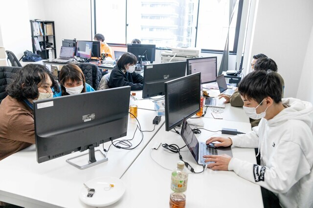
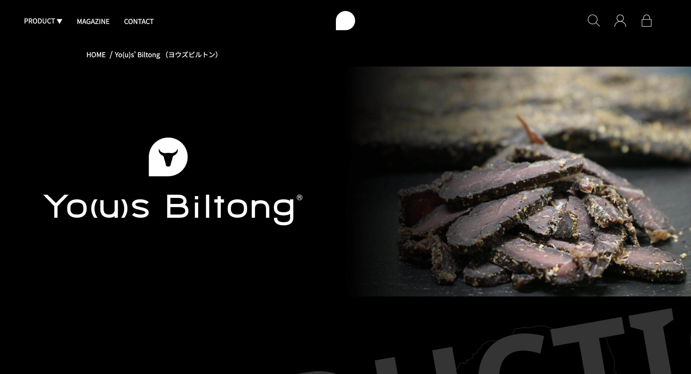
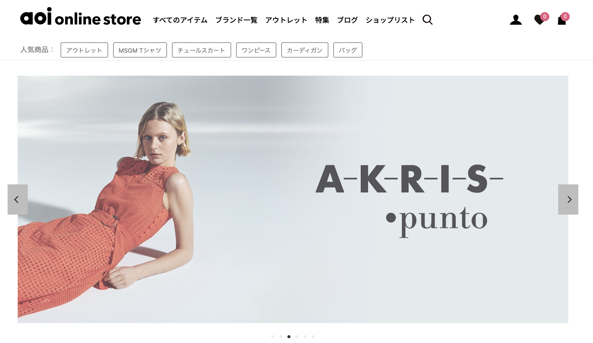
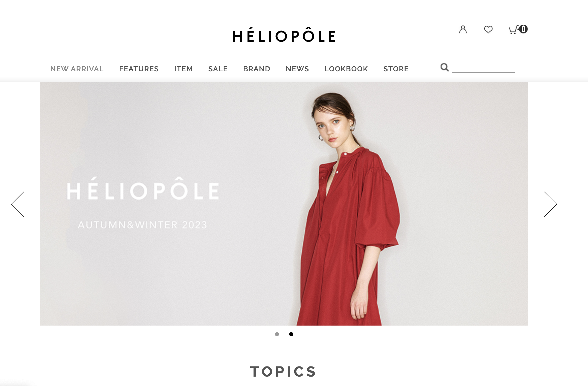
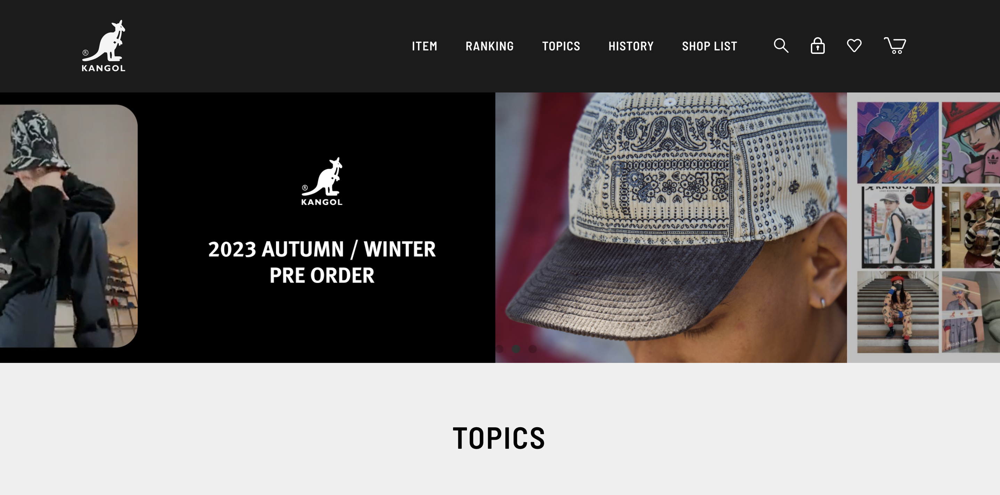
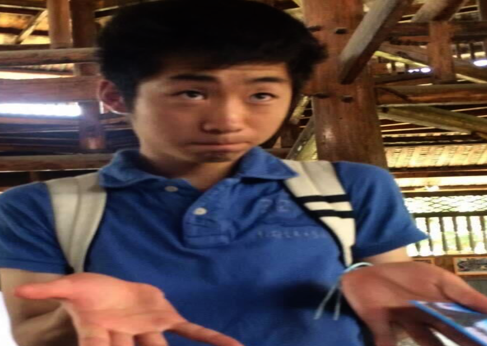
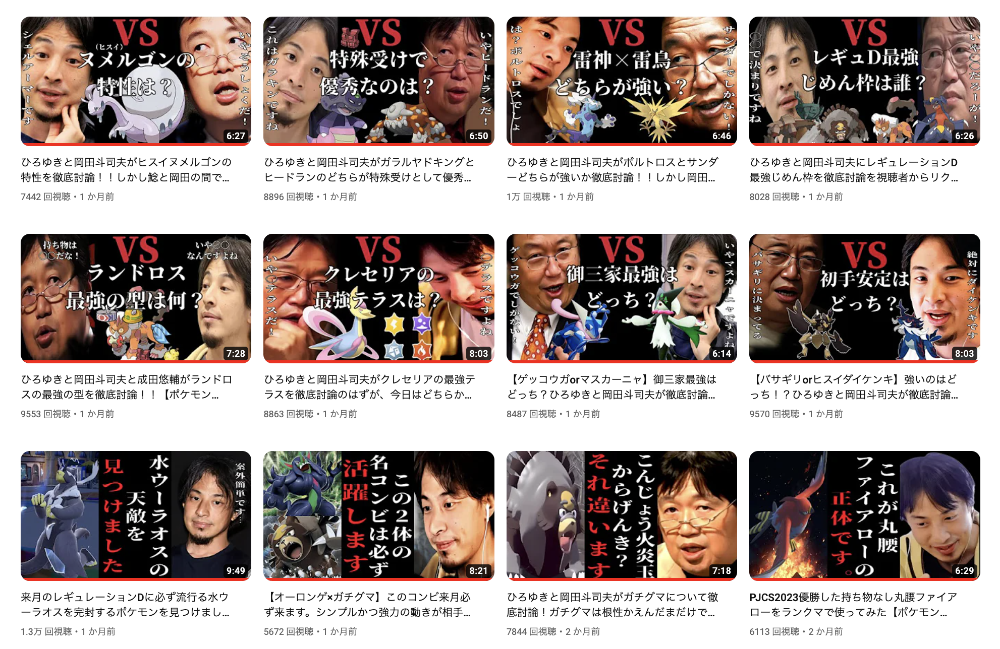

東野陽生 Portfolio Site
エンジニア（現職）
エンジニア（現職）


基本情報
東野 陽生（ひがしの はるき）1995年5月21日生まれ (28歳)
大阪府堺市出身
エンジニアとして
-
・２０２０年１０月：前職入社（正社員）
・勤務期間 ：２０２０年１０月〜２０２２年１１月
・２０２３年９月 ：現職入社（正社員）
・勤務期間 ：２０２３年９月〜現在前職にてバックエンドエンジニアとして２年以上働いていました。会社に常駐しながら受託会社として保守運用をメインに業務をしていました。
会社ではPHPを使ったバックエンド処理やデータ周りを扱う事も多かったのでSQLを使ったデータの抽出や管理が多かったです。
チームの規模としては会社のバックエンドエンジニアは４人チームで、Gitを使ってコード管理を行なっていました。
現職では、バックエンドエンジニアとしてクライアントの要望に応じて作成された仕様書から、
DB設計にテスト仕様書やフォーム定義書を私が作成して開発をしています。
まだ入社にて５ヶ月ですが、写真販売サービスや税理士マッチングサイトに保育士や介護士の求人サイトなど幅広く開発に携わっています。
携わった主なプロジェクト（現職）
-
・プロジェクト１ : 保育士介護士の求人サイト運用保守
・チーム情報 : バックエンドエンジニア１名主な開発・実装内容A
【どのような機能の開発・実装か】
求人サイト利用者による就職・転職体験談ページの作成
管理画面にて登録した就職・転職体験談をフロントにて表示させる
【課題・問題点】
転職して初めての仕事だったのでまずはプロダクトの仕様とコードを理解するのが課題でした。
仕様書もなかったので色々と理解するのに時間はかかるのも問題でした。
また、先方と要件が詰めれていないままでの引き継ぎだったので、要件を詰める事も必要でした。
【打ち手・使用した技術】
仕様書が無かったので、自分なりサイトを動かしてログを見ながら自分なりの簡易的な仕様書をまずは作成しました。
そこから今回の就職・転職体験談ページの要件の整理を行い先方と要件を確定させました。
また、最初の開発だったので自分が開発する部分が他の部分に影響しないかいつもより考えながらテーブル設計から開発を行いました。
主な開発・実装内容B
【どのような機能の開発・実装か】
関東と関西の求人だけでなく、全国の求人を載せるようにする
管理画面で全国の求人を登録出来るようにする
【課題・問題点】
関東と関西から全国に拡大するので、都道府県や市区町村の追加だけでなく
求人ごとに最寄駅の設定も行うために鉄道会社の追加、東海や九州などのエリアの追加も行う必要があり、追加するDB情報が大量にあったので漏れがないかが課題でした。
また、DBの追加をしても鉄道会社と都道府県の紐付けや
求人とエリアの紐付けなどテーブルごとの整合性が大丈夫かどうかが問題でした。
【打ち手・使用した技術】
上記の課題や問題に関しては、事前のDB設計を何回も確認して行いました。
求人の勤務地は都道府県や市区町村にエリアに、最寄駅に沿線が問題無く紐付けされて登録されているか。沿線や駅や鉄道会社に関しては漏れが無いか、自分の目だけでは不安だったので
ツールを使いながら漏れが無いか確認を行いました。
１人で開発していたので、いつも以上に何回も確認しながら問題無く求人の全国対応が出来たのは良かったです。 -
・プロジェクト２ : 全国の税理士紹介サイトの立ち上げ
・チーム情報 : リーダー１人 ディレクター１名 バックエンドエンジニア３名主な開発・実装内容C
【どのような機能の開発・実装か】
全国の税理士紹介サイトの新規立ち上げを任されました。
仕様書は既に出来ていたので仕様書に基づいたフォーム定義書やテスト仕様書とテーブル設計を行いながら自身で開発も行っていました。
【課題・問題点】
初めてテーブル設計やテスト仕様書などのドキュメントの作成も行ったので、仕様通り漏れがないかという部分とテーブル設計が大丈夫かどうが課題でした。
さらに今まで以上にJavascriptなどのフロント部分の開発が多かったので、慣れないフロントエンドの開発に自分がどこまで出来るのかという部分も課題でした。
【打ち手・使用した技術】
フォーム定義書とテスト仕様書は過去のを参考にしながら出来たのですが、テーブル設計は直属の上司が社長だったので、社長と相談しながらテーブル設計は作っていきました。
テーブルを１から設計するとなると命名からテーブルごとの関係からカラムの設定値と大変でしたがやり切りました。テーブルの数は合計で50個ぐらいでした。
また、JSでのフロント開発についてはJSの基礎から分かっていない事が多かったので、まずは分かる部分であるバックエンドの部分から実装を行い、分かっていないJSの部分は家に帰って平日の夜や土日で勉強してから会社でJSの実装をして分からない部分はまた家で勉強しての繰り返しで実装していきました。
当初はこんなサイト自分で１から携わるのは厳しいと感じていましたが、やってみるとそこまで大変な事でもなかったので、実際にやってみる事が一番大事だと感じました。 -
・プロジェクト３ : 写真販売サイトの立ち上げ
・チーム情報 : リーダー１人 バックエンドエンジニア２名主な開発・実装内容D
【どのような機能の開発・実装か】
某スポーツチームの写真販売サイトの立ち上げを任されました。
プロのカメラマンさんが撮った写真をファンの方々に向けて写真を販売するというサイトです。
【課題・問題点】
設計や実装は当初問題無く出来ていたのですが、メインで開発を行っていた方が退職され、入れ替わる形で僕がこのプロジェクトに入りました。
引き継ぎ文書を読んでも不明な点があったので、仕様はどうなっていて、どこまで出来ていて、何が出来ていないか自分の目で把握する事が課題でした。
また、テストが全く出来ていない事が分かったので、テストをどうするかが問題でした。
ページごとの仕様に問題は無いか、バッチは問題無く動くのか、先方との認識にズレは生じていないか、それらをまずは整理しなければいけない状況が問題でした。
【打ち手・使用した技術】
仕様の確認や漏れがないか確認する為に、まずは他のエンジニアと協力しながらテスト仕様書を作成しました。
そこで出てきた修正事項を修正していきながら、次に先方に聞いた方が良い要件の確認などのものは先方に聞きながら開発を行っていきました。
これらを行い仕様はどうなっていて、どこまで出来ていて、何が出来ていないか判断出来て良かったです。
また、バッチの動作確認も行いました。バッチは50個ほどあったので、１つ１つテストしていくのは地味に大変な作業でした。
ログを見ながら値に問題が無いか、メールの送受信は出来ているか。銀行払いやコンビニ払いが問題無くバッチ処理で出来ているか、プリントして頂く印刷会社に注文情報がきちんと届いているかなどバッチ１つ１つをテストするのは大変でしたが、地道に行い大きな問題無くリリース出来ました。
-
・プロジェクト４ : 顔検索機能実装
・チーム情報 : リーダー１人 バックエンドエンジニア４名主な開発・実装内容E
【どのような機能の開発・実装か】
幼稚園・保育園向け写真・動画販売システムの管理画面にて、
１つの写真を選択して、写真から検出される顔をさらに選択すると、
選択した写真と同じ顔が写っている写真を検索結果として表示する機能を開発しました。
【課題・問題点】
まず顔検出や顔検索を行う開発が初めてだった事です。
画像の分析を行う開発が問題無く実装出来るかが課題でした。
そして顔検索機能を実装する際に、必要なDBのテーブルやログの記録内容とその置く場所など、
顔検索機能を実装する上で必要なものを洗い出した後に漏れが無いかが問題でした。
【打ち手・使用した技術】
まず、顔検出や顔検索にはAmazon Rekognitionを使用しました。このAWS上のサービスは写真の顔認識や顔の検出だけでなく、全ての写真からの顔の類似性を判断してくれるので、今回の開発に問題無く導入する事が出来ました。
次に、Amazon Rekognitionの導入が決まったので、必要なテーブル情報を決めていきました。
画像に写っている顔情報をそれぞれ保存するテーブルと、顔検索を行った後のスコアを保存するテーブルが必要だと感じたので作成しました。
そして、顔検出や顔検索した際にAmazon Rekognitionから返されるログ情報が大量にあった為、S3に新たにログ専用のバケットを生成し、そこにログを保存する事にしました。
実装期間は何ヶ月もかかる大きい開発でしたが、設計からAmazon Rekognitionを使った開発までたくさんの経験が出来て良かったです。
エンジニア（前職時代）
エンジニア（前職時代）
前職在籍時（一番手前です）
食品ECサイト
アパレルECサイト１
アパレルECサイト２
アパレルECサイト３
携わった主なプロジェクト（前職）
-
・プロジェクト１ : 某アパレルサイトの新規立ち上げをし、その後に運用保守を行う
・チーム情報 : リーダー１人 フロントエンドエンジニア２名 バックエンドエンジニア２名主な開発・実装内容A
【どのような機能の開発・実装か】
お客様から頂いた商品情報や前サイトの顧客情報や受注情報などをDBに新規立ち上げ前に入れる。
その後の保守運用では商品詳細画面での商品動画の埋め込み（管理画面で個々の商品の動画を登録出来るようにし、フロント側で動画を表示させる）や商品購入時にギフトラッピング項目の追加（フロント画面の構築と受注完了時に値の登録）などを保守運用の開発では行っていました。
【課題・問題点】
事前に要件定義していた商品や顧客に受注のDBのカラムと頂いたCSVファイルの情報では内容がズレていた。なのでこちら側で準備していたバッチでDBに顧客や商品情報などを入れようとしても取り込めずに、エラーが発生する状況になる事が事前に発覚した。
問題となっていた部分を解消し、その後にDBに取り込める事が出来たが、必要なDBのカラムに数値が入っていない問題が２箇所発生した。
【打ち手・使用した技術】
頂いたCSVファイルで必要な項目を精査し、不必要な項目を排除した。足りないカラムは上司と相談しながら、必要な部分は先方に追加で提出をしてもらった。またそれでもエラーが発生していた為に、バッチで実行されるファイルのコードを見直し、エラーの修正を行なった。エラー内容はハイフンの有無や、必要の無い空白によるものでした。
カラムに必要な数値が入っていない問題は、他のテーブルと内部結合を行い必要な項目を入れるように修正を行なった。
主な開発・実装内容B
【自分が携わった開発】
Lookbook（メーカーが新商品のリリースに合わせてシーズンごとに用意している商品カタログです）を管理画面で登録出来るようにし、フロント画面でも表示出来るようにする。
【課題・問題点】
上司からフロントエンジニアの社員にもバックエンドの作業を教えて欲しいと言われたので、 上記の開発を同僚のフロントエンジニアが開発完了を納期までに出来るようにサポートしていましたが、やはり慣れないバックエンド作業だったので、 こちらが作業の概要や流れを説明しても、フロントエンジニアの社員の方が理解が追いついていない状況でした。
【打ち手・使用した技術】
そこで作業内容をざっくり説明するのではなく、全てを手取り足取り伝えるようにやり方を変えました。 CRUD処理の方法やバリデーションの実装、モデルから必要なDBの情報を取り、フロント側に画像や文言を出す方法などをつきっきりで説明してサポートし、 全て理解して頂けなくても、一度完走させる事を目標に自分の全ての知見を伝えました。 結果的にはなんとなくバックエンド業務を理解して頂けるようにはなりました。しかしその後も同じような業務を繰り返しているサポートしている内に、 その方はバックエンド側もある程度精通された貴重な人材となっていました。 -
・プロジェクト２ : 某食品ECサイト立ち上げ運用新規立ち上げをし、その後に運用保守を行う
・チーム情報 : リーダー１人 フロントエンドエンジニア２名 バックエンドエンジニア２名主な開発・実装内容
【どのような機能の開発・実装か】
バリデーションの実装や管理画面でのCRUD処理やmigrationやseedersなどのDB管理を任されました。 その後の運用保守はクライアントからの要望に応じて、自分でコーディングしてAWSへデプロイを１人で行っていました。
【課題・問題点】
プログラミング未経験の状態から始めて携わった業務でした。 ファイルの量から書かれたコードの量に裏側で行われている処理の多さに自分がどこまで早くキャッチアップ出来るかが問題でした。 さらになんとか実装した後にも、AWSのデプロイ作業を任されたのですが、AWSの知識がほとんど無かったので無事にデプロイ出来るのかが問題でした。
【打ち手・使用した技術】
要件定義の資料がなかったので、まず全て知っている上司に裏側の処理やコードの説明を受けながら実装に入りました。どこまで早く自分がキャッチ出来るかは、コードを読みまくりその上で分からない所は上司に聞くの繰り返しで解決しました。 そこを乗り越えるとLaravelの知識やバックエンド側のCRUD処理は入社前に勉強していたので問題なく行えました。 そして、AWSのデプロイ作業に関しても自身で業務後にUdemyでAWSについて学習しました。VPCやサブネットの作成からEC2やRDSの設置などを学び、デプロイ作業が間違ったら大変なので、上司に聞きながらデプロイを行い、その後の運用保守も問題なくデプロイ出来ました。 -
・プロジェクト３ : 某アパレルサイトの新規立ち上げをし、その後に運用保守を行う
・チーム情報 : リーダー１人 フロントエンドエンジニア２名 バックエンドエンジニア２名主な開発・実装内容A
【どのような機能の開発・実装か】
お友達紹介機能でクーポン発行
新規登録時にもらったポイントが期限切れした際にメールでアナウンスするバッチ実装
【課題・問題点】
お友達紹介機能でクーポン発行ですが、顧客とクーポン情報が必要だったので、これら２つの情報をどうデータとして管理するのかが自分の中で課題でした。
また、新規登録時にもらったポイントが期限切れした際にメールでアナウンスするバッチ実装ですが、期限切れ１週間前に顧客メールアドレスにメールをするのですが、バッチ処理であるcronの書き方やメールの送信が初めてだったので、自分で実装出来るかが課題でした。
【打ち手・使用した技術】
まずお友達紹介機能でクーポン発行ですが、 顧客がお友達紹介をした時点でcouponとcustomerの中間テーブルとなるcoupon_coustomerテーブルを作成しました。 これにより顧客とクーポン情報を両方把握出来るようにしました。 実装として紹介された側がクーポンコードを入力した時点で紹介者側と紹介された側にクーポンが適用されるようになっています。
また、新規登録時にもらったポイントが期限切れした際にメールでアナウンスするバッチ実装ですが、 cronの書き方は調べつつ他の書き方を見ながら対応し、顧客の抽出は1年前から1週間後を計算してWHERE条件で抽出し、 メールの送信は同僚が似たような実装をした事があるとの事だったので、それを参考にして実装を行いました。
主な開発・実装内容B
【自分が携わった開発】
商品詳細を開いたタイミングでレコメンドアイテムを表示
【課題・問題点】
商品詳細に表示するレコメンドアイテムで、クライアント側の要望が二転三転し、どの条件で商品を優先して表示させるべきかが定まっていなかった。
【打ち手・使用した技術】
決定事項として、同じカテゴリーかつ新着順で表示するという最低条件は決まっていたので、 フレームワークであったFuelPHPの該当DBファイルにSQLを書いて、 itemテーブルから開いた商品と同じカテゴリーID（変数でpresenterから渡しています）をWHERE条件で抽出し、 ORDER BYで新着順にしてフロント側で表示させました。
その後に最終決定で開いた商品と同じブランドのものをレコメンドで表示させて欲しいという事だったので、 WHERE条件にブランドも追加して解決しました。
エンジニアになるまで
エンジニアになるまで
大学時に取り上げられた新聞

独学時のポートフォリオ
プログラミング独学時の仲間と勉強会

大学入学以降
-
・2014年4月 ：立命館大学文学部入学
落語研究会に入りお笑いに明け暮れる。３年の時に部長となり、落語の全国大会ではトップ10の成績に入りました。
学内での公演のみならず、京都を中心に大阪・滋賀など関西圏で出張公演も部で行っていました。年間150件〜200件の出張公演の依頼を頂き、京都新聞にも取り上げて頂きました。
市役所の職員に就職
-
・2018年3月 ：立命館大学文学部卒業
・同年に市役所の職員に就職「無駄なプライドがなく、メンタル強そう」 という理由でタスクが同期の中で一番多い課に配属。 タスクが多い中、施設の貸し出し及び管理を紙の台帳から、データで管理するようにし、外部からもチェック可能に仕様を変更しました。結果、使用者にとっても利用が楽になったと意見を頂き、タスクを減らす事にも成功しました。
- ・2019年4月 ：別の課に移動
-
体育館利用者数とその売上が下がっていた為、それらの向上が求められた。
まず、どの時間帯ごとの人数と年齢層のデータをとった結果、午前中が高齢者の利用が突出して多く、利用出来ていない団体が複数いる事が分かりました。
そこで、午前中の料金を上げて、午後の料金を下げる事で午前中に使用している何団体かが午後の使用に移り、その空いたスペースを利用出来ていなかった団体に提供が出来ました。
それによって利用者数と売上は共に前年比より10％向上し、又お客様の満足度も向上しました。
なぜ公務員を辞めてまでエンジニアになったのか
プログラミングを通じてまだまだアナログな社会を変えたいからです。
前職を通じて、仕事場だけでなく、社会ではたくさんアナログな事が多いと痛感しました。そんなアナログで苦労している方々にプログラミングを通して問題を解決したいと感じた為、エンジニアになりたいと感じました。
前職を通じて、仕事場だけでなく、社会ではたくさんアナログな事が多いと痛感しました。そんなアナログで苦労している方々にプログラミングを通して問題を解決したいと感じた為、エンジニアになりたいと感じました。
独学時のポートフォリオ
ユーザーに提供（30人）＋ 現役エンジニアの方々からフィードバック（３名）
ユーザーと現役エンジニアから指摘頂いた事の修正。 指摘された個数は約50個ほどですが、全て解決しました。 指摘した頂いた事は概ね下記URLに有ります。
https://github.com/kasyu-create/manzai/issues
ユーザーと現役エンジニアから指摘頂いた事の修正。 指摘された個数は約50個ほどですが、全て解決しました。 指摘した頂いた事は概ね下記URLに有ります。
https://github.com/kasyu-create/manzai/issues
Youtuberとして
Youtuberとして
Youtubeアイコン
投稿した動画の一部
前職を辞め突然Youtuberになった訳
周りが弱く自分でもいけるのではと思ったからです。
Youtubeのチャンネル登録者が半年で2.3万人
Tiktokのフォロワーが1年で1.8万人を達成しました。
Youtubeのチャンネル登録者が半年で2.3万人
Tiktokのフォロワーが1年で1.8万人を達成しました。
Youtuberとして学んだ事
- ・時流に乗る大切さ
- ・動画編集やサムネイル作成
- ・己の実力の無さ
なぜもう一度エンジニアになったのか
Youtuberとしての目標を達成出来なかったからです。
会社を辞めてからの半年間は会社時代よりも必死に試行錯誤を続けてYoutubeの活動をしていましたが、会社員時代の半分ぐらいしか月収として稼げませんでした。
目標にしていた半年間で会社員時代の給料を超えるという目標を達成出来なかったです。
目標を掲げたその日から、達成出来なければ私にYoutuberとしての実力がない事の証明と思っていました。
そして達成出来なければエンジニアに戻る事も挑戦する前から決めていました。
しかし挑戦した事は全く後悔していません。素晴らしい日々でした。
会社を辞めてからの半年間は会社時代よりも必死に試行錯誤を続けてYoutubeの活動をしていましたが、会社員時代の半分ぐらいしか月収として稼げませんでした。
目標にしていた半年間で会社員時代の給料を超えるという目標を達成出来なかったです。
目標を掲げたその日から、達成出来なければ私にYoutuberとしての実力がない事の証明と思っていました。
そして達成出来なければエンジニアに戻る事も挑戦する前から決めていました。
しかし挑戦した事は全く後悔していません。素晴らしい日々でした。
チャンネルURL
Youtubeチャンネル- コンテンツ内容 ひろゆきと岡田斗司夫と成田悠輔がポケモン実況をする。
こちらのポケモンの技選択や相手プレイヤーの行動に対して、ひろゆきと岡田斗司夫と成田悠輔が互いの意見をぶつけ合って罵り合う動画です。
要するにただただおじさんがポケモン対戦で口論するだけの動画です。
最後に
最後に
再び仲間と勉強

再度オフ会の勉強会に参加

これから目指すエンジニア像
まずはフルスタックエンジニアになります。
上司からこいつに任せておけばとりあえずコーディングは大丈夫と思って頂けてような、
フロントからバックエンドやインフラといった幅広く携わる事が出来るフルスタックなエンジニアになります。
その後は作業者から仕様書を書くなどより上流に携わっていきたいと考えています。
上司からこいつに任せておけばとりあえずコーディングは大丈夫と思って頂けてような、
フロントからバックエンドやインフラといった幅広く携わる事が出来るフルスタックなエンジニアになります。
その後は作業者から仕様書を書くなどより上流に携わっていきたいと考えています。
自己PR
-
1.行動と結果を出す
私には目的を達成する為に動く行動力とそして結果も出せます。
公務員を辞めて未経験から独学でエンジニアとして就職して在籍した会社でたくさんの開発経験をしました。
Youtubeに挑戦してチャンネル登録者が半年で2.3万人
Tiktokのフォロワーが1年で1.8万人を達成しました。
ただ行動するだけでなく、結果も出してきました。
-
2.目標に向かって日々努力が出来る
私は夢や目標に向かってコツコツと努力が出来ます。
エンジニアで働く時は業務時間外でも、業務で分からなかった事は家で調べてキャッチアップしながら、
そこで分かった事は他のメンバーとも共有して属人化も防いでいました。
Youtuberとしても再生数を伸ばす為に、他のチャンネルの研究や自分より数字を持っているYoutuberに相談しながら日々動画編集と撮影をして数字と向き合っていました。
ここまで見て頂きありがとうございます！
Youtuberとしての挑戦は失敗に終わりましたが、ここからの自分の人生は再びエンジニアとして捧げていきます！
もう何も後悔する事はなく、迷わずエンジニアとしてのキャリアを邁進している私は、
はっきり言って強いです。
今までのエンジニアとして経歴を活かしていきながら、新しくご縁のある所でもすぐにキャッチアップして活躍します！
よろしくお願い致します！
もう何も後悔する事はなく、迷わずエンジニアとしてのキャリアを邁進している私は、
はっきり言って強いです。
今までのエンジニアとして経歴を活かしていきながら、新しくご縁のある所でもすぐにキャッチアップして活躍します！
よろしくお願い致します！